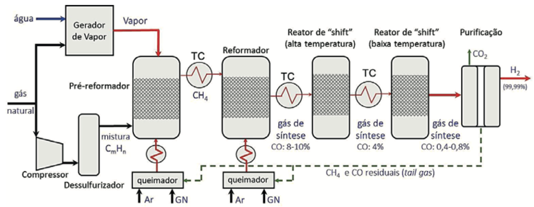
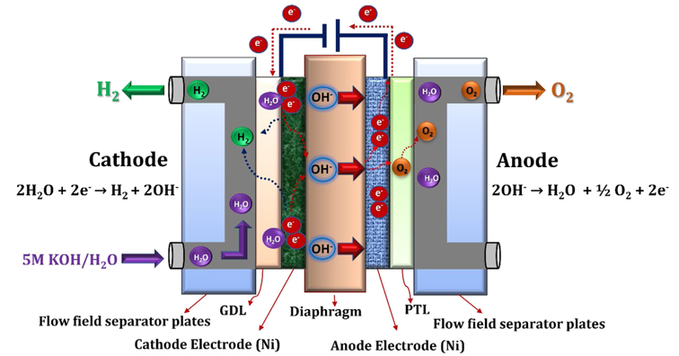
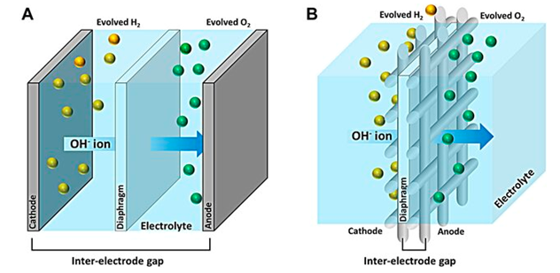
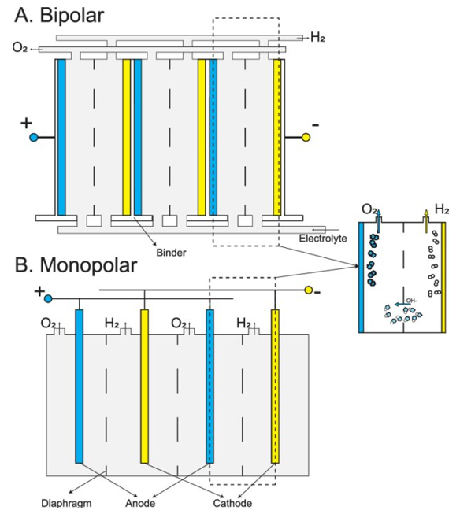
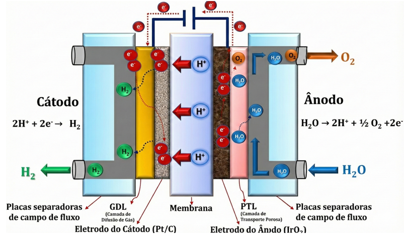
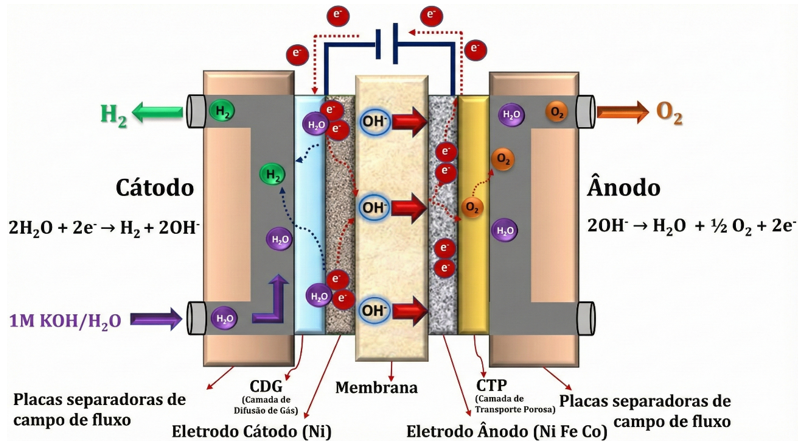
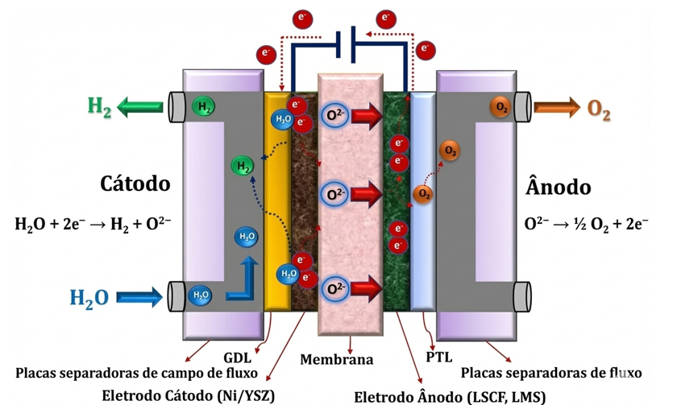
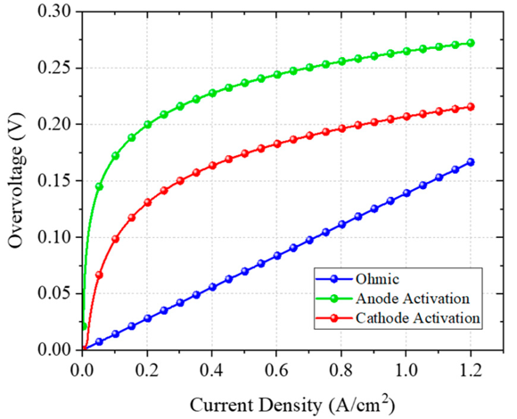
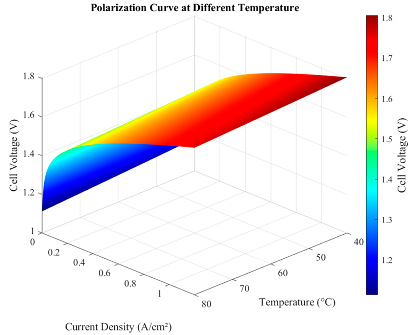

CAPÍTULO 2 PRODUÇÃO DE HIDROGÊNIO
Historicamente, a maior parte do hidrogênio produzido no mundo provém de fontes não renováveis, mas as tecnologias de eletrólise da água são cruciais para o desenvolvimento do hidrogênio verde, ou de baixo carbono, um vetor energético universal e livre de carbono [1]. A seguir são apresentadas as principais rotas para produção de hidrogênio.
2.1 Produção a partir de combustíveis fósseis (rotas dominantes)
Atualmente, a maior parte do hidrogênio global ainda é obtida a partir de combustíveis fósseis, como gás natural e carvão. Atualmente, cerca de 96% de todo o hidrogênio é obtido de combustíveis fósseis, com a maior parte proveniente da reforma a vapor de gás natural [2]. Essas rotas de produção são maduras e geralmente apresentam os menores custos específicos de produção de hidrogênio.
2.1.1 Reforma a Vapor de Metano (SMR, do inglês Steam Methane Reforming)
É o método de produção de hidrogênio mais amplamente utilizado no mundo, respondendo por mais de 48% da produção global. O processo tipicamente usa gás natural como insumo, sendo realizado em reatores sob elevadas pressões e temperaturas (cerca de 800 a 900 °C) e requer uma quantidade significativa de calor externo [3].
A reforma a vapor se dá em reatores que normalmente operam sob elevadas pressões e temperaturas, sendo os hidrocarbonetos (gás natural) convertidos em gás de síntese (mistura contendo \(H_2\), \(CO\), \(CH_4\), etc.) em um leito catalítico, normalmente a base níquel, que tem a função de facilitar a cinética das reações e diminuir a temperatura do processo [4], [5].
No caso específico da produção de hidrogênio a partir da reforma a vapor do gás natural, o processo industrial, de forma geral, ocorre como indicado esquematicamente na Figura 2.1.

Figura 2.1: Representação esquemática do processo de produção de hidrogênio através da reforma a vapor. Fonte: [4].
Parte do gás natural que chega na planta de produção de hidrogênio é queimado em uma caldeira para a produção de vapor, que será usado no processo de reforma [4]. A composição do gás natural depende de sua origem, mas, em geral, nela predomina a presença de metano (\(CH_4\)), com teores acima de 70%, seguido de outros compostos, alguns dos quais possuem enxofre em sua composição. Desta forma, após ser comprimido até a pressão de trabalho, o gás natural é direcionado para a unidade de dessulfurização, onde é efetuada a remoção do enxofre, antes de ser efetivamente reformado. A dessulfurização evita que o enxofre danifique os catalisadores dos reatores usados no processo [4].
Em seguida, o gás natural é direcionado ao pré-reformador, no qual os hidrocarbonetos de cadeias mais longas são convertidos predominantemente em metano. Os produtos do pré-reformador são aquecidos (800-900°C), e direcionados ao reformador, onde o metano é então convertido em hidrogênio e monóxido de carbono. Em seguida, a mistura reagente (gás de síntese) entra nos reatores de shift (deslocamento gás-água). Nestes reatores, o monóxido de carbono produzido durante a reforma, que neste estágio do processo corresponde a 8,0-10,0% (vol.) da composição do gás de síntese, pode ser convertido em hidrogênio.
A reação de deslocamento gás-água pode ser executada em duas etapas, sendo que a primeira ocorre a alta temperatura (350 a 450°C) e reduz o teor de monóxido de carbono para cerca de 4,0-4,5%. A segunda ocorre em temperaturas menores (180 a 340°C) produzindo um fluxo gasoso rico em hidrogênio e no qual a concentração volumétrica de monóxido de carbono é reduzida para 0,4-0,8%.
Ao sair dos reatores shift, o fluxo gasoso rico em \(H_2\) ainda contém alguns gases indesejados, como por exemplo, metano não reagido, frações residuais de \(CO\), \(CO_2\) etc. Assim, estes gases devem ser removidos da mistura, o que se dá em unidades de purificação (por exemplo, PSA, do inglês Pressure Swing Adsorption), que são capazes de produzir um fluxo gasoso com concentração de hidrogênio superior a 99,99% (vol.) [4].
2.1.2 Gaseificação do Carvão (GC)
É uma opção viável devido à abundância do carvão em termos de reservas. É um método amplamente utilizado, correspondendo a cerca de 18% da produção de hidrogênio [2], ficando atrás apenas da reforma a vapor e da reforma de óleo [3]. Devido à sua eficiência inferior (60-75%) em comparação com o método de SMR (70-85%), não é tão amplamente utilizado como este último [3]. No entanto, em países e regiões onde as reservas de carvão são relativamente abundantes ou os preços do gás natural não são favoráveis, como a China, a gaseificação de carvão é também o processo dominante de produção de hidrogênio.
A gaseificação de carvão ocorre em um equipamento específico conhecido como gaseificador. Dependendo do modo de contato entre os reagentes e o gaseificador, os gaseificadores podem ser subdivididos em vários tipos, entre os quais o gaseificador de fluxo arrastado (entrained flow gasifier) é o tipo mais limpo e eficiente [3]. Entretanto, o seu mecanismo básico é o mesmo: o carvão é secado e moído e depois alimentado num gaseificador, onde reage sucessivamente com oxigênio e vapor sob condições de alta temperatura para produzir uma mistura gasosa contendo \(H_2\), \(CO\) e \(CO_2\). A mistura gasosa gerada consome \(CO\) e produz \(H_2\) através da reação de shift (deslocamento de gás-água). Finalmente, o \(CO_2\) é removido da mistura na unidade de PSA [3].
Uma desvantagem óbvia da gaseificação do carvão para a produção de hidrogênio é o seu significativo impacto ambiental. De acordo com relatórios na literatura, a GC tem aproximadamente o dobro das emissões de carbono da SMR quando ambas as tecnologias dominantes de produção de hidrogênio a partir de combustíveis fósseis são avaliadas a partir de uma perspectiva de ciclo de vida completo [3]. Na verdade, a gaseificação de carvão tem o mais alto potencial de aquecimento global de todos os métodos de produção de hidrogênio existentes, e tem um potencial de acidificação considerável, provavelmente relacionado com o maior teor de enxofre no carvão.
2.1.3 Oxidação Parcial
Neste processo, o gás de síntese é produzido a partir da oxidação parcial de um combustível usando ar, oxigênio ou vapor de água como oxidantes, em condições não-estequiométricas, e em um reator que normalmente opera sob elevadas temperaturas e pressões. O gás de síntese gerado, contendo \(H_2\), \(CO\) e \(CO_2\), deve, em seguida, passar por etapas de purificação e separação de componentes indesejáveis, num processo semelhante ao utilizado para a purificação e limpeza dos gases produzidos por reforma a vapor de metano. A oxidação parcial é o método mais adequado para produzir hidrogênio a partir de matérias-primas com altas taxas de carbono para hidrogênio, como óleo pesado e nafta [3]. O reator de oxidação parcial tende a ser mais compacto do que o reator de reforma a vapor, pois neste último é necessário fornecer calor adicional através do uso de trocadores de calor. No caso da oxidação parcial, como o processo é exotérmico, não há necessidade de fornecimento de calor adicional [4].
2.1.4 Reforma Autotérmica
A reforma autotérmica combina as reações de reforma a vapor e oxidação parcial em um único reator, onde parte do metano é queimado com oxigênio para fornecer a energia necessária, tornando-o autotérmico [3], [5].
2.1.5 Decomposição Termocatalítica
A decomposição termocatalítica do metano, também conhecida como pirólise do metano ou craqueamento do metano, é um processo no qual o metano é basicamente decomposto em seus componentes elementares, isto é, hidrogênio (\(H_2\)) e carbono sólido (\(C\)). A reação pode ocorrer sem o uso de catalisadores, porém, como a reação é endotérmica, a energia requerida pela reação (calor) é significativa e elevadas temperaturas operacionais (1200 a 1300°C) são necessárias. Assim, para que as reações de decomposição ocorram a baixa temperatura torna-se imprescindível o uso de catalisadores, o que pode reduzir a temperatura operacional significativamente, a qual, dependendo do catalisador utilizado, pode variar de 600 a 800°C [4].
Cabe ressaltar que todas as tecnologias de reforma apresentas emitem dióxido de carbono (\(CO_2\)) em maior ou menor quantidade, dependendo do processo específico escolhido, das pressões e temperaturas de trabalho, bem como do tipo de catalisador utilizado.
Assim, a utilização de técnicas de captura de CO2 é fundamental para que as instalações de produção de \(H_2\) a partir da reforma de hidrocarbonetos (metano/gás natural) se alinhem com os objetivos mundiais de reduzir as emissões de gases causadores de efeito estufa nos próximos anos. O hidrogênio produzido a partir da reforma de hidrocarbonetos só poderá ser considerado como “\(H_2\) Azul” se a planta de produção estiver integrada a um sistema de Captura e Armazenamento de Carbono, de outra forma, o hidrogênio será enquadrado na categoria de “\(H_2\) Cinza”.
2.2 Eletrólise da água
A eletrólise da água é um processo eletroquímico que utiliza eletricidade para decompor a água em hidrogênio e oxigênio, conforme (2.1):
\[\begin{equation} H_2O + \text{Eletricidade} + \text{Calor} \rightarrow H_2 + \frac{1}{2} O_2 \tag{2.1} \end{equation}\]
A reação apresentada em (2.1) requer uma tensão de célula termodinâmica teórica de 1,23 V para decompor a água em hidrogênio e oxigênio à temperatura ambiente. No entanto, experimentalmente, a tensão de célula necessária para a decomposição eficiente da água é de 1,48 V [6]. A tensão adicional é necessária para superar a cinética e a resistência ôhmica do eletrólito e dos componentes da célula do eletrolisador, que serão mais bem explicadas na seção 2.4.
Este método é fundamental para a produção de hidrogênio verde, ou de baixo carbono, quando a eletricidade utilizada é proveniente de fontes de energia renovável, apesar de ainda suprir apenas uma pequena parcela da demanda de produção hidrogênio [2]. As principais tecnologias de eletrólise são:
Eletrólise com Membranas Polimérica ou de Troca de Prótons (PEM, do inglês, polymer electrolyte membrane ou proton exchange membrane): É uma tecnologia promissora e considerada a mais adequada para acoplamento com fontes renováveis intermitentes, como eólica e solar. As vantagens incluem alta eficiência, resposta rápida a flutuações de energia, alta densidade de corrente, design modular e produção de hidrogênio de alta pureza. No entanto, o regime ácido (pH) da membrana requer o uso de catalisadores de metais nobres, como irídio (ânodo) e platina (cátodo), elevando os custos. Eletrolisadores PEM usam a menor quantidade de água para produzir \(H_2\) em comparação com outras tecnologias de eletrólise.
Eletrólise Alcalina: É uma tecnologia madura e bem estabelecida, utilizada pela indústria há quase um século. Utiliza um eletrólito líquido (solução aquosa de hidróxido de potássio, \(KOH\)) e opera em temperaturas entre 70 °C e 90 °C. Caracteriza-se pelo custo de capital relativamente baixo, durabilidade comprovada e elevada eficiência nominal (65% a 80%). É avaliada como a tecnologia mais bem estabelecida para a produção de \(H_2\) verde em larga escala.
Eletrólise de Óxido Sólido: Opera em altas temperaturas (600 °C a 1000 °C), utilizando vapor de água. Sua principal vantagem é a elevada eficiência, pois parte da energia necessária para a decomposição da água é fornecida na forma de calor, reduzindo o consumo de eletricidade. Embora promissora, ainda está em fase de desenvolvimento e não está comercialmente disponível para a produção de \(H_2\) em larga escala.
Eletrólise de Membrana de Troca Aniônica (Anion Exchange Membrane - AEM): É uma abordagem promissora que busca combinar as vantagens da eletrólise alcalina e PEM, permitindo o uso de catalisadores e componentes de baixo custo. No entanto, a tecnologia AEM ainda está em um estágio inicial de desenvolvimento, exigindo melhorias em estabilidade da membrana e desempenho da pilha, ou stack.
2.2.1 Eletrólise alcalina
A eletrólise alcalina da água é uma tecnologia madura e bem estabelecida para a produção industrial de hidrogênio até a faixa de multi-megawatts em aplicações comerciais em todo o mundo. O fenômeno da eletrólise alcalina da água foi introduzido pela primeira vez por Troostwijk e Diemann no ano de 1789 [6]. Após diversos desenvolvimentos, no ano de 1939, entrou em operação a primeira planta industrial de eletrolisador alcalino de água em larga escala com capacidade de \(10.000\ \mathrm{Nm^3H_2/h}\) [6]. Posteriormente, no início do século XX, mais de 400 unidades de eletrolisadores alcalinos industriais foram instaladas e operadas com sucesso para aplicações industriais. No entanto, o eletrolisador alcalino de água opera em temperaturas mais baixas (30–80 °C) com uma solução alcalina concentrada de 20% a 30% (\(KOH/NaOH\ 5M\)). Além disso, no eletrolisador alcalino, são utilizados eletrodos de aço inoxidável revestidos com níquel (\(Ni\)) e diafragmas à base de amianto/\(ZrO_2\) como separador. O portador de carga iônica é o íon hidroxila (\(OH^-\)), com \(KOH/NaOH\) e água permeando através da estrutura porosa do diafragma para fornecer a funcionalidade da reação eletroquímica.
A eletrólise alcalina da água é um design de sistema favorável para aplicações em larga escala. Hoje, o custo de investimento da eletrólise alcalina é de 500–1000 \(USD/kW\), e a vida útil do sistema é de 90.000 h [6]. Contudo, o principal desafio associado à eletrólise alcalina da água é a densidade de corrente limitada (\(0{,}1\)–\(0{,}5\ \mathrm{A/cm^2}\)) devido à moderada mobilidade do \(OH^-\) e ao uso de eletrólitos corrosivos (\(KOH\)). Devido à alta sensibilidade do eletrólito \(KOH\) ao \(CO_2\) ambiente e à subsequente formação de sal de carbonato de potássio (\(K_2CO_3\)), ocorre uma diminuição no número de íons hidroxila e na condutividade iônica. Além disso, o sal de \(K_2CO_3\) fecha os poros da camada de difusão de gás do ânodo, o que subsequentemente diminui a transferibilidade de íons através do diafragma e acarreta a consequente redução da produção de hidrogênio. Além disso, a eletrólise alcalina da água produz gases de baixa pureza (99,9%) (Hidrogênio e Oxigênio) devido ao fato de o diafragma existente não impedir completamente o cruzamento (crossover) dos gases de uma meia-célula para a outra.
A eletrólise alcalina da água é uma técnica de decomposição eletroquímica da água na presença de eletricidade. A decomposição eletroquímica da água consiste em duas reações de meia-célula individuais, como a reação de evolução de hidrogênio (HER) no cátodo, (2.2) e a reação de evolução de oxigênio (OER) no ânodo, (2.3).
\[\begin{equation} H_2O + 2e^- \rightarrow H_2 + 2OH^- \quad \text{(cátodo)} \tag{2.2} \end{equation}\] \[\begin{equation} OH^- \rightarrow \frac{1}{2} O_2 + H_2O + 2e^- \quad \text{(ânodo)} \tag{2.3} \end{equation}\]
Durante o processo de eletrólise alcalina, inicialmente no lado do cátodo, dois mols de solução alcalina são reduzidos para produzir um mol de hidrogênio (\(H_2\)) e dois mols de íons hidroxila (\(OH^-\)); o \(H_2\) produzido pode ser eliminado da superfície catódica e os íons hidroxila restantes (\(OH^-\)) são transferidos, sob a influência do circuito elétrico entre o ânodo e o cátodo, através do separador poroso para o lado do ânodo. No ânodo, os íons hidroxila (\(OH^-\)) são descarregados para produzir meia molécula de oxigênio (\(O_2\)) e uma molécula de água (\(H_2O\)), mostrado na Figura 2.2.
Os principais componentes da célula de eletrólise alcalina da água são, respectivamente: diafragmas/separadores, coletores de corrente (camada de difusão de gás), placas separadoras (placas bipolares) e placas terminais, também mostrados na Figura 2.2.

Figura 2.2: Diagrama esquemático de um eletrolisador alcalino. Fonte: [6].
Em geral, diafragmas de amianto/Zirfon/aço inoxidável perfurado revestido com níquel são usados como separadores na eletrólise alcalina. A malha/espuma de níquel é usada como camadas de difusão de gás, e placas separadoras de aço inoxidável ou aço inoxidável revestido com níquel são usadas como placas bipolares e placas terminais, respectivamente.
As bolhas dos gases hidrogênio e oxigênio, produzidas no cátodo e no ânodo, respectivamente, aumentam a resistência da célula, reduzindo o contato entre os eletrodos e o eletrólito. Consequentemente, a eficiência é reduzida. Deve-se, então, dar atenção especial ao projeto da célula para maximizar o contato entre o eletrodo e o eletrólito líquido. Células alcalinas avançadas usam uma “configuração de zero gap” (espaço zero) para diminuir o impacto das bolhas de gás e as perdas ôhmicas, reduzindo o espaço entre os eletrodos [1], como mostrado na Figura 2.3.

Figura 2.3: (a) Projeto convencional; (b) projeto de espaço zero de uma célula de eletrolisador alcalina. Fonte: [7].
As principais desvantagens relacionadas à tecnologia alcalina são:
- O ambiente corrosivo.
- A baixa densidade de corrente.
- A taxa de produção limitada de 25% a 100% devido à difusão de gases através do diafragma em carga parcial.
A pressão operacional típica desta tecnologia é de 25–30 bar, mas eletrolisadores de até 60 bar estão disponíveis [1].
Existem duas estruturas de células para eletrólise alcalina no mercado: bipolar e monopolar, conforme apresentado na Figura 2.4. Na configuração bipolar, Figura 2.4 (a), cada eletrodo possui duas polaridades e as células são conectadas em série. A tensão aplicada à pilha é a soma da tensão das células individuais. A corrente que flui através da pilha é a mesma para todas as células.
- Vantagens: Apresenta densidades de corrente mais altas, o que permite produzir gás sob pressão mais elevada, e resulta em uma pilha mais compacta do que o design unipolar.
- Desvantagens: Não pode ser reparada sem a necessidade de manutenção de toda a pilha.
Na configuração monopolar, Figura 2.4 (b), as células são conectadas em paralelo e os eletrodos são ligados à fonte de alimentação CC correspondente. A tensão total aplicada à pilha (stack) é a mesma aplicada a uma célula individual, e os eletrodos possuem uma polaridade única.
- Vantagens: É mais simples do ponto de vista da fabricação e permite uma manutenção e reparo mais fáceis sem a necessidade de desligar toda a pilha.
- Desvantagens: Geralmente opera em baixas densidades de corrente e temperaturas mais baixas.

Figura 2.4: Diagramas esquemáticos de eletrolisadores alcalinos com estrutura (a) bipolar e (b) monopolar. Fonte: [8].
2.2.2 Eletrólise PEM
Os eletrolisadores de água PEM utilizam um eletrólito sólido, composto por uma membrana polimérica (ou membrana de troca de prótons) como condutor iônico. O esquema de operação de um eletrolisador de água PEM é mostrado na Figura 2.5. A água é oxidada no ânodo, de acordo com (2.4), para produzir oxigênio, que é eliminado na superfície do ânodo, os prótons remanescentes atravessam a membrana condutora e os elétrons viajam pelo circuito externo. No lado do cátodo, os prótons e elétrons são recombinados para produzir o hidrogênio gasoso que é liberado no cátodo, de acordo com (2.5).
\[\begin{equation} H_2 \rightarrow \frac{1}{2} O_2 + 2H^+ + 2e^- \quad \text{(ânodo)} \tag{2.4} \end{equation}\] \[\begin{equation} 2H^+ + 2e^- \rightarrow H_2 \quad \text{(cátodo)} \tag{2.5} \end{equation}\]

Figura 2.5: Esquema de uma célula de um eletrolisador PEM. Fonte: Adaptado de [6].
Os principais componentes da célula de eletrólise da água PEM são o conjunto membrana-eletrodo (que consiste na membrana e nos materiais dos eletrodos anódico e catódico), a camada de difusão de gás, as placas separadoras (placas bipolares) e as placas terminais, respectivamente. As membranas de troca de prótons típicas são Nafion®, Fumapem®, Flemion® e Aciplex®, respectivamente. No entanto, a membrana mais amplamente utilizada é a Nafion® (Nafion® 115, 117 e 212), pois a membrana Nafion® oferece diversas vantagens, como alta condutividade de prótons, capacidade de alta densidade de corrente, alta resistência mecânica e estabilidade química. Os materiais de eletrodo de ânodo e cátodo de última geração são eletrocatalisadores à base de metais nobres, especialmente \(IrO_2\) para a Reação de Evolução de Oxigênio (OER) e Platina (\(Pt\)) suportada em carbono para a Reação de Evolução de Hidrogênio (HER), respectivamente [6]. Esses metais nobres são muito caros, e o irídio é mais escasso que a platina [1]. O titânio poroso/malha de titânio e o tecido de carbono são utilizados como camadas de difusão de gás no ânodo e no cátodo. Placas bipolares com diferentes designs de campo de fluxo, feitas de material de titânio revestido com platina/ouro, são usadas como separadores e placas terminais, respectivamente. No entanto, essas placas separadoras são caras e responsáveis por 48% do custo total da célula [9]. Portanto, os custos de alguns são as principais desvantagens dos eletralisadores PEM e utilização de materiais não-nobres representam um desafio e são grandes áreas de estudos [1].
2.2.3 Eletrólise com membrana de troca aniônica (AEM)
A eletrólise da água com AEM (do inglês, Anion Exchange Membrane ou Membrana de Troca Aniônica) é uma tecnologia em desenvolvimento para a produção de hidrogênio verde. Nos últimos anos, muitas organizações e instituições de pesquisa têm trabalhado ativamente no desenvolvimento da eletrólise com AEM devido ao seu baixo custo e alto desempenho em comparação com outras tecnologias convencionais de eletrólise. Os primeiros estudos sobre eletrólise AEM datam de 2011 e posteriormente, muitos pesquisadores vêm contribuindo para o desenvolvimento da AEM [6]. A tecnologia de eletrólise da água com AEM é semelhante à eletrólise alcalina da água convencional, a principal diferença é a substituição dos diafragmas convencionais (amianto) por uma membrana de troca aniônica (membranas de troca iônica de amônio quaternário). A eletrólise da água com AEM oferece diversas vantagens, tais como: uso de catalisadores de metais de transição de baixo custo, em vez de catalisadores de metais nobres; uso de água destilada ou solução alcalina (\(KOH\)) de baixa concentração como eletrólito, em vez de alta concentração. Apesar das vantagens significativas, a AEM ainda requer mais investigações e melhorias em relação à estabilidade da MEA (Membrane Electrode Assembly - Conjunto Membrana-Eletrodo) e à eficiência da célula, que são essenciais para aplicações comerciais ou em larga escala. Atualmente, a estabilidade relatada é de 2000h com Sustanion e 1000h para Fumatech (A 201 e FAA3-50), e >35.000 h para o eletrolisador AEM multicore da Enapter [6].
A reação eletroquímica consiste em duas reações de meia-célula: a reação de evolução de hidrogênio (HER) e a reação de evolução de oxigênio (OER). Inicialmente, no lado do cátodo, a molécula de água é reduzida para gerar hidrogênio (\(H_2\)) e íons hidroxila (OH-) pela adição de dois elétrons. O hidrogênio é liberado da superfície do cátodo e os íons hidroxila (\(OH^-\)) difundem-se através da membrana de troca iônica para o lado do ânodo pela atração positiva do mesmo, enquanto os elétrons são transportados através do circuito externo para o ânodo. No lado do ânodo, os íons hidroxila recombinam-se como moléculas de água e oxigênio ao perder elétrons. O oxigênio produzido é liberado do ânodo. O princípio básico de funcionamento de um eletrolisador AEM está apresentado na Figura 2.6 e reações de meia-célula da eletrólise da água com AEM são descritas em (2.6) e (2.7).
\[\begin{equation} OH^- \rightarrow \frac{1}{2} O_2 + H_2O + 2e^- \quad \text{(ânodo)} \tag{2.6} \end{equation}\] \[\begin{equation} H_2O + 2e^- \rightarrow H_2 + 2OH^- \quad \text{(cátodo)} \tag{2.7} \end{equation}\]

Figura 2.6: Esquema de uma célula de um eletrolisador AEM. Fonte: Adaptado de [6].
Geralmente, os componentes da célula de eletrólise da água com AEM são, respectivamente:
- Membrana (separador).
- Materiais de eletrodo.
- Coletores de corrente (camada de difusão de gás).
- Placas separadoras (placas bipolares).
- Placas terminais.
As membranas de troca aniônica típicas são membranas de troca iônica de amônio quaternário, como as membranas comerciais Sustanion®, Fumasep e Fumatech. Os materiais de eletrodo comumente usados para ânodo e cátodo são eletrocatalisadores à base de metais de transição, especialmente Níquel e materiais de liga \(NiFeCo\), respectivamente. A espuma de níquel/malha de níquel porosa e o tecido de carbono são usados como camadas de difusão de gás do ânodo e do cátodo. Aço inoxidável e placas separadoras de aço inoxidável revestidas de níquel são usadas como placas bipolares e placas terminais, respectivamente [6].
A tecnologia de eletrólise com AEM encontra-se em fase de desenvolvimento até a escala de kW. Globalmente, várias organizações e instituições de pesquisa estão trabalhando ativamente no desenvolvimento de eletrolisadores de água com AEM, no entanto, diversas inovações e melhorias ainda são necessárias para escalar essa tecnologia para aplicações comerciais [6]. Os principais desafios são a estabilidade limitada (atualmente 35000 h, com uma meta de estabilidade de 100000 h) e o alto custo de produção de hidrogênio [6].
2.2.4 Eletrólise com óxido sólido (SOEC)
A célula de eletrólise da água de óxido sólido (SOEC - Solid Oxide Electrolysis Cell) é uma das células de conversão eletroquímica; ela converte energia elétrica em energia química. O desenvolvimento da eletrólise da água de óxido sólido começou nos EUA na década de 1970 pela General Electric e pelo Brookhaven National Laboratory, seguido pela Dornier na Alemanha [6].
Tipicamente, o eletrolisador de água de óxido sólido opera com água na forma de vapor a altas temperaturas (500–850 °C), o que pode reduzir drasticamente o consumo de energia para separar a água em hidrogênio e oxigênio e, consequentemente, aumentar a eficiência energética. Essa melhoria na eficiência energética pode levar a uma forte redução no custo do hidrogênio, visto que o consumo de energia é o principal contribuinte para o custo de produção de hidrogênio na eletrólise.
Além disso, a eletrólise da água de óxido sólido oferece duas grandes vantagens em comparação com as tecnologias de eletrólise existentes: A primeira é a alta temperatura de operação, que resulta em termodinâmica e cinética de reação favoráveis, permitindo eficiências de conversão inigualáveis. A segunda é que a eletrólise da água de óxido sólido pode ser facilmente integrada termicamente com síntese química a jusante (subsequente), isto é, a produção de metanol, éter dimetílico e amônia [6].
Ademais, a eletrólise de óxido sólido não requer o uso de eletrocatalisadores de metais nobres e oferece alta eficiência de conversão. Apesar dessas vantagens, a estabilidade insuficiente a longo prazo impediu a comercialização da eletrólise da água de óxido sólido. Até o momento, a estabilidade relatada é de apenas 20.000 h com eletrólito fino de zircônia estabilizada com ítria [6].
Tipicamente, a eletrólise da água de óxido sólido opera em temperaturas mais altas com o consumo de água na forma de vapor e gera hidrogênio verde e oxigênio. Durante o processo de eletrólise de óxido sólido, inicialmente no lado do cátodo, a molécula de água é reduzida em hidrogênio (\(H_2\)) e íon óxido (\(O^{2-}\)) pela adição de dois elétrons.
O hidrogênio liberado da superfície catódica e os íons óxido restantes (\(O^{2-}\)) viajam através da membrana de troca iônica para o lado do ânodo. No lado do ânodo, os íons óxido (\(O^{2-}\)) são posteriormente oxidados para gerar oxigênio e elétrons; em seguida, o oxigênio produzido é liberado da superfície anódica e os elétrons viajam através do circuito externo para o lado do cátodo pela atração positiva do mesmo.
As reações de ânodo e cátodo na SOEC são descritas em (2.8) e (2.9).
\[\begin{equation} O^{2-} \rightarrow \frac{1}{2} O_2 + H_2O + 2e^- \quad \text{(ânodo)} \tag{2.8} \end{equation}\] \[\begin{equation} H_2O + 2e^- \rightarrow H_2 + O^{2-} \quad \text{(cátodo)} \tag{2.9} \end{equation}\]
O princípio básico de funcionamento da eletrólise da água de óxido sólido é mostrado na Figura 2.7.

Figura 2.7: Esquema de uma célula de um eletrolisador SOEC. Fonte: Adaptado de [6].
A célula de eletrólise de água de óxido sólido (SOEC) é composta por três componentes principais: dois eletrodos porosos (ânodo e cátodo) e um eletrólito cerâmico denso capaz de conduzir íons óxido (\(O^{2-}\)). O eletrólito mais utilizado é a zircônia estabilizada com ítria (YSZ), que é especificamente um material cerâmico denso à base de óxido de zircônio dopado com 8 mol% de ítria (estrutura cristalina cúbica estabilizada pela adição de ítria) [6]. Isso ocorre porque o eletrólito de zircônia estabilizada com ítria apresenta um desempenho estável e excelente em temperaturas mais altas (700–850 °C). Além disso, o eletrólito YSZ possui alta condutividade iônica (\(10^{-2}\)–\(10^{-1}\) S/cm) associada a uma boa estabilidade química e térmica. O material do eletrodo de hidrogênio (cátodo) de última geração é um compósito cerâmico-metal composto por YSZ e níquel (\(Ni\)-YSZ), que é um catalisador de metal não nobre com alta condutividade eletrônica [6]. Os eletrodos de oxigênio (ânodo) mais amplamente utilizados são materiais de perovskita, como LSCF (Ferrita de Cobalto, Estrôncio e Lantânio) e LSM (Manganita de Estrôncio e Lantânio). O LSCF é o material com condutividade iônica-eletrônica mista, que possui alta condutividade elétrica e iônica (\(10^2\) e \(10^{-2}\) S/cm), juntamente com altas propriedades de difusão de oxigênio. Tipicamente, o LSM é considerado material “tradicional” de referência porque apresenta bom desempenho [6].
Devido às elevadas temperaturas de operação inerentes à tecnologia SOEC, este sistema é particularmente interessante para práticas de cogeração e integração térmica com processos industriais [6]. Ao aproveitar o calor residual de fontes externas (como indústrias siderúrgicas, de cimento, reatores nucleares ou usinas solares térmicas) para a geração do vapor de entrada, a demanda por energia elétrica no processo de eletrólise é minimizada. Esta sinergia permite que a eficiência global da planta, frequentemente referida como eficiência térmica de sistema, possa se aproximar ou até superar 90%, uma vez que parte da energia necessária para a quebra da molécula de água é fornecida na forma de calor térmico de baixo custo em vez de eletricidade de alto valor. Assim, a SOEC deixa de ser apenas um componente isolado para se tornar um elemento central em ecossistemas de simbiose industrial e economia circular.
2.3 Comparativos entre as tecnologias de eletrólise
As principais características técnicas das quatro tecnologias de eletrólise apresentadas estão resumidas na Tabela 2.1.
| Característica | Alcalina | AEM | PEM | SOEC |
|---|---|---|---|---|
| Eletrólito | KOH/NaOH (5M) | Suporte polimérico DVB com 1M KOH/NaOH | Eletrólito polimérico sólido (PFSA) | Zircônia estabilizada com Ítria (YSZ) |
| Separador | Asbesto / Zirfon | Fumatech | Nafion® | Eletrólito sólido YSZ |
| Eletrodo/Catalisador (Lado do Hidrogênio) | Aço inoxidável perfurado revestido com Níquel | Níquel | Carbono com Platina | Ni/YSZ |
| Eletrodo/Catalisador (Lado do Oxigênio) | Aço inoxidável perfurado revestido com Níquel | Níquel ou ligas NiFeCo | Óxido de Irídio | Perovskitas (LSCF, LSM) (La,Sr,Co,Fe) (La,Sr,Mn) |
| Camada de Difusão de Gás (GDL) | Malha de Níquel | Espuma de Níquel / tecido de carbono | Malha de Titânio / tecido de carbono | Malha/espuma de Níquel |
| Placas Bipolares | Aço inoxidável / Aço inox revestido com Níquel | Aço inoxidável / Aço inox revestido com Níquel | Titânio revestido com Platina/Ouro ou Titânio | Aço inoxidável revestido com Cobalto |
| Densidade de corrente nominal | 0,2–0,8 A/cm2 | 0,2–2 A/cm2 | 1–2 A/cm2 | 0,3–1 A/cm2 |
| Faixa de tensão (limites) | 1,4–3 V | 1,4–2,0 V | 1,4–2,5 V | 1,0–1,5 V |
| Temperatura de operação | 70–90∘C | 40–60∘C | 50–80∘C | 700–850∘C |
| Pressão da célula | < 30 bar | < 35 bar | < 70 bar | 1 bar |
| Pureza do H2 | 99,5–99,9998% | 99,9–99,9999% | 99,9–99,9999% | 0.999 |
| Eficiência | 50%–78% | 57%–59% | 50%–83% | 89% (laboratório) |
| Vida útil (stack) | 60.000 h | >30.000 h | 50.000–80.000 h | 20.000 h |
| Estágio de desenvolvimento | Madura | P&D | Comercializada | P&D |
| Área do eletrodo | 10.000–30.000 cm2 | < 300 cm2 | 1.500 cm2 | 200 cm2 |
| Custos de capital (stack) mín. 1 MW | 270 USD/kW | Desconhecido | 400 USD/kW | >2.000 USD/kW |
| Custos de capital (stack) mín. 10 MW | 500–1.000 USD/kW | Desconhecido | 700–1.400 USD/kW | Desconhecido |
Um resumo com as principais vantagens e desvantagens de cada uma está na Tabela 2.2.
| Vantagens | Desvantagens | |
|---|---|---|
| Eletrólise alcalina (AEC) | Tecnologia bem estabelecida | Densidades de corrente limitadas |
| Comercializada para aplicações industriais | Cruzamento (crossover) de gases | |
| Eletrocatalisadores livres de metais nobres | Eletrólito líquido altamente concentrado (KOH 5M) | |
| Custo relativamente baixo | - | |
| Estabilidade de longo prazo | - | |
| Eletrólise AEM (Membrana de Troca Aniônica) | Eletrocatalisadores livres de metais nobres | Estabilidade limitada |
| Eletrólito líquido de baixa concentração (KOH 1M) | Em desenvolvimento | |
| Eletrólise PEM (Membrana de Troca de Prótons) | Tecnologia comercializada | Custo dos componentes da célula |
| Opera com maiores densidades de corrente | Eletrocatalisadores de metais nobres | |
| Alta pureza dos gases | Eletrólito ácido | |
| Design de sistema compacto | - | |
| Resposta rápida | - | |
| Eletrólise de Óxido Sólido (SOEC) | Alta temperatura de operação | Estabilidade limitada |
| Alta eficiência | Em desenvolvimento |
Por fim, a Tabela 2.3 apresenta um apanhado dos principais fabricantes de eletrolisadores e as especificações de alguns modelos de eletrolisadores comerciais.
| Tecnologia/Fabricante | País de Origem | Nome (Modelo) | Capacidade de H₂ (Nm³/h) | Pressão (bar) | Consumo de Energia (kWh/Nm³) | |
|---|---|---|---|---|---|---|
| Alcalina | Nel | Noruega | A3880 | 2400–3880 | 200 | 3,8–4,4 |
| Cummins | Canadá | HySTAT®-100–10 | 100 | 10 | 5,0–5,4 | |
| John Cockerill | Bélgica | DQ-500 | 500 | 30 | 4,0–4,3 | |
| McPhy | França | MeLyzer 800–30 | 800 | 30 | 4,5 | |
| Sunfire | Alemanha | HyLink Alkaline | 2230 | 30 | 4,7 | |
| Nuberg PERIC | China–Índia | ZDQ-600 | 600 | 20 | 4,6 | |
| TIANJIN | China | FDQ800 | 1000 | 5 | 4,4 | |
| GreenHydrogen | Dinamarca | HyProvide A-90 | 90 | 35 | 4,3 | |
| AEM | Enapter | Alemanha | AEM Multicore | 210 | 35 | 4,8 |
| PEM | Nel | Noruega | M5000 | 5000 | 30 | 4,5 |
| Cummins | Canadá | HyLYZER®-4.000-30 | 4000 | 30 | 4,3 | |
| Siemens | Alemanha | Silyzer 300 | 100–2000 | 35 | N/D | |
| Proton Onsite | EUA | M400 | 417 | 30 | N/D | |
| ITM Power | Reino Unido | HGASXMW | 110–1900 | 20 | N/D | |
| Plug Power | EUA | GenFuel 5MW | 1000 | 40 | 5,2 | |
| Elogen | França | ELYTE 260 | 260 | 30 | 4,9 | |
| SOEC | Sunfire | Alemanha | HyLink SOEC | 750 | 40 | 3,6 |
2.4 Modelagem matemática de uma célula PEM
A eletrólise da água consiste na conversão de energia elétrica em energia química, com a separação das moléculas de água em hidrogênio e oxigênio. O processo é fundamentado na variação de energia livre de Gibbs (\(\Delta G\)) da reação global (2.10) [10].
\[\begin{equation} 2H_2O(l) \rightarrow 2H_2(g) + O_2(g) \tag{2.10} \end{equation}\]
Na equação, \(H_2O(l)\) representa a água em estado líquido que serve como reagente e é decomposta pela passagem de corrente elétrica. O termo \(H_2(g)\) representa o hidrogênio molecular produzido ao final do processo, liberado na forma gasosa no cátodo. Por sua vez, \(O_2(g)\) corresponde ao oxigênio molecular gerado na reação, também liberado como gás no ânodo.
A tensão mínima teórica necessária para que essa reação ocorra é a tensão reversível, definida pela equação de Nernst (2.11), que indica o limite mínimo de energia requerido para a decomposição da água [1].
\[\begin{equation} E_{rev} = E_{rev}^{0}(T) + \frac{RT}{2F} \ln \left( \frac{P_{H_2} \, P_{O_2}^{1/2}}{P_{H_2O}} \right) \tag{2.11} \end{equation}\]
Na expressão, \(E_{rev}^{0}(T)\) corresponde ao potencial padrão dependente da temperatura, que indica o potencial eletroquímico da reação em condições padrão, ajustado para a temperatura de operação. O termo R representa a constante universal dos gases (R = 8,3145 J/mol.K), enquanto \(T\) é a temperatura absoluta (em K) e F é a constante de Faraday (F = 96.485,3321 C/mol), associada à carga elétrica por mol de elétrons. O termo \(P_{H_2}\) representa a pressão parcial de hidrogênio, enquanto \(P_{O_2}\) indica a pressão parcial de oxigênio, elevada à potência \(^{1/2}\) por conta da estequiometria da reação. Por fim, \(P_{H_2O}\) corresponde à pressão parcial da água, que aparece no denominador da expressão.
No estado padrão (P = 1 atm e T = 298.15 K), a energia livre de Gibbs da reação global (10) é 236.483 kJ/mol (este valor positivo indica que a reação de separação da água é um processo não espontâneo, exigindo energia de uma fonte externa). Conhecendo os valores da energia livre de Gibbs da reação \(\Delta G_{R}^{0}\), a constante de Faraday (F) e o número de mols de elétrons transferidos durante a reação (n = 2) permite a estimativa de \(E_{rev}^{0}\).
\[\begin{equation} E_{rev}^{0} = \frac{\Delta G_{R}^{0}}{nF} = 1{,}229\ \mathrm{V} \tag{2.12} \end{equation}\]
O potencial padrão dependente da temperatura pode ser descrito pela relação empírica (2.13) [11].
\[\begin{equation} E_{rev}^{0}(T) = 1{,}229\ \mathrm{V} - 0{,}0008456\ \mathrm{V}\,(T - 298{,}15\ \mathrm{K}) \tag{2.13} \end{equation}\]
Além do mais, a expressão (2.11) mostra que a operação pressurizada eleva \(E_rev\), pois o aumento das pressões parciais dos produtos desloca o equilíbrio, exigindo maior energia de entrada.
A tensão termoneutra, \(E_{th}^{0}\), que representa o potencial necessário para que a eletrólise se processe em regime adiabático (isto é, sem transferência líquida de calor com o meio externo), pode ser calculada por (2.14) [1].
\[\begin{equation} E_{th}^{0} = \frac{\Delta H_{R}^{0}}{nF} = 1{,}481\ \mathrm{V} \tag{2.14} \end{equation}\]
O símbolo H_{R}^{0} corresponde à variação de entalpia da reação, que expressa o calor total envolvido no processo de decomposição da água (-285,83 kJ/mol em situações padrão). E o fator \(nF\), com n = 2, no denominador indica a quantidade de carga necessária para a transferência dos dois mols de elétrons envolvidos na reação global da eletrólise.
Essas relações são fundamentais, pois formam a base para o cálculo de eficiência e para a modelagem da tensão aplicada, que sempre supera os valores termodinâmicos teóricos devido a perdas internas.
A tensão operacional da célula é composta pela soma da tensão reversível e das sobretensões:
\[\begin{equation} E_{cell} = E_{rev} + \eta_{ativ} + \eta_{ohm} + \eta_{conc} \tag{2.15} \end{equation}\]
O termo \(E_{rev}\) corresponde à tensão reversível, que é o valor teórico mínimo exigido pela termodinâmica para que a eletrólise ocorra. O termo \(\eta_{ativ}\) representa a sobretensão de ativação, originada da energia extra necessária para iniciar as reações eletroquímicas nos eletrodos. Já \(\eta_{ohm}\) corresponde à sobretensão ôhmica, associada às resistências internas do sistema, incluindo membrana, eletrodos e contatos elétricos. Por fim, \(\eta_{conc}\) representa a sobretensão de concentração, causada pelas limitações no transporte de massa e pela diferença entre a concentração de reagentes na superfície do eletrodo e no volume da solução.
Sobretensão de Ativação:
Resultado da cinética das reações eletroquímicas, especialmente da evolução de oxigênio (OER) no ânodo, a sobretensão é baseada na equação de Butler-Volmer que pode ser representada de forma simplificada em (2.16) [11].
\[\begin{equation} \eta_{ativ} = \frac{RT}{\alpha F}\,\operatorname{arcsinh}\!\left(\frac{i}{2i_0}\right) \tag{2.16} \end{equation}\]
Onde \(R\) é a constante universal dos gases, \(T\) a temperatura absoluta, refletindo o efeito térmico sobre a cinética da reação. O parâmetro α é o coeficiente de transferência de carga, que mede a sensibilidade da velocidade da reação à variação de potencial. Já \(F\) corresponde à constante de Faraday, \(i\) é a densidade de corrente e \(i_0\) o parâmetro de troca, valor que expressa a atividade eletroquímica intrínseca do eletrodo e geralmente baixo para a OER.
Sobretensão Ôhmica
A sobretensão ôhmica está relacionada principalmente à resistência da membrana, pela lei de Ohm (2.17) [11].
\[\begin{equation} \eta_{ohm} = i\,R_{mem} \tag{2.17} \end{equation}\]
Com
\[\begin{equation} R_{mem} = \frac{\delta_{mem}}{\sigma_{mem}} \tag{2.18} \end{equation}\]
onde \(i\) representa a densidade de corrente aplicada, \(R_{mem}\) é a resistência ôhmica da membrana, \(\delta_{mem}\) indica a espessura da membrana e \(\sigma_{mem}\) sua condutividade iônica, mostrando que membranas mais espessas ou menos condutivas aumentam a perda ôhmica no sistema.
A condutividade depende fortemente da hidratação da membrana e também da temperatura [11], conforme apresentado em (2.19):
\[\begin{equation} \sigma_{mem} = \left(0.005139\,\lambda - 0.00326\right)\exp\!\left[1268\left(\frac{1}{303} - \frac{1}{T}\right)\right] \tag{2.19} \end{equation}\]
onde \(T\) é a temperatura absoluta, expressa em Kelvin (\(K\)) e \(\lambda\) é o teor de água na membrana. O teor de água na membrana (\(\lambda\)) é um parâmetro determinante para a condutividade e para a estabilidade operacional dela.
Sobretensão de Concentração
A sobretensão de concentração torna-se relevante somente em densidades de corrente muito elevadas, quando o transporte de reagentes e produtos se torna limitante [11]. Ela pode ser calculada como apresentado em (2.20).
\[\begin{equation} \eta_{conc} = -\frac{RT}{nF}\,\ln\!\left(1 - \frac{i}{i_{lim}}\right) \tag{2.20} \end{equation}\]
Onde \(R\) é a constante universal dos gases, \(T\) a temperatura absoluta, refletindo o efeito térmico sobre o processo difusivo. O parâmetro \(n\) corresponde ao número de elétrons envolvidos na reação eletroquímica, enquanto \(F\) é a constante de Faraday, que relaciona carga elétrica e quantidade de matéria. O termo dentro do logaritmo, \(\left(1 - \frac{i}{i_{lim}}\right)\), expressa a razão entre a corrente aplicada \(i\) e a corrente limite de difusão \(i_{lim}\), que define o ponto em que o transporte de massa se torna o fator limitante. À medida que \(i\) se aproxima de \(i_{lim}\), o logaritmo cresce e a sobretensão de concentração aumenta significativamente.
Em eletrolisadores PEM comerciais, trabalha-se geralmente abaixo do regime limitante, o que permite desconsiderar esse termo na maior parte das simulações. A Figura 2.8 exemplifica a sensibilidade das contribuições das sobretensões ôhmica e de ativação em função da densidade de corrente.

Figura 2.8: Contribuições das sobretensões (ôhmica e ativação) em função da densidade de corrente. Fonte: [12].
O desempenho de uma célula de eletrólise é tradicionalmente caracterizado pela sua curva de polarização, um gráfico da tensão da célula versus a densidade de corrente (corrente por unidade de área ativa). A Figura 2.9 mostra a curva de polarização de uma célula de eletrólise PEM em diferentes temperaturas.

Figura 2.9: Curva de polarização de um eletrolisador PEM em função da densidade de corrente e da temperatura. Fonte: [12].
2.4.1 Análise da eficiência da eletrólise e consumo de energia específico
A eficiência em um eletrolisador indica o desempenho do dispositivo, se ele tem um consumo adequado de energia e tensão para a produção de hidrogênio do dispositivo. As principais eficiências são a de Faraday (\(\eta_F\)), de tensão (\(\eta_V\)) e do eletrolisador (\(\eta_{ele}\)).
Em um eletrolisador, como um eletrolisador PEM, estas eficiências são definidas da seguinte forma:
Eficiência de Faraday (\(\eta_F\)): Relaciona a quantidade real de produto (hidrogênio) obtida com a quantidade teoricamente máxima que poderia ser produzida pela corrente elétrica aplicada. Mede as perdas causadas por reações laterais ou cruzamento de gás através da membrana. A eficiência de Faraday normalmente é calculada utilizando modelos empíricos ou semi-empíricos em função das condições operativas como corrente, temperatura e pressão e é reduzida significativamente em baixas densidades de corrente [13].
Eficiência de Tensão (\(\eta_V\)): Relaciona a tensão termicamente neutra reversível (\(E_{th}^{0}\)), que é a tensão mínima necessária para a reação ocorrer, com a tensão de operação real da célula (\(E_{cell}\)), incluindo perdas por polarização, como em (2.21).
\[\begin{equation} \eta_{V} = \frac{E_{th}^{0}}{E_{cell}} \tag{2.21} \end{equation}\]
- Eficiência Global do Eletrolisador (\(\eta_{ele}\)): É o produto das eficiências de Faraday e de Tensão, (2.22), representando a eficiência total do sistema na conversão de energia elétrica em energia química (hidrogênio). A eficiência do eletrolisador pode também ser calculada pela razão entre o Valor de Aquecimento Superior do Hidrogênio (\(HHV_{H_2}\)), que tem um valor de 3,54 kWh/Nm3, e o consumo de energia (\(C_E)\), como em (2.23). Assim, a taxa de fluxo de produção de hidrogênio e oxigênio podem ser calculadas diretamente pela lei de Faraday através das equações (2.24) e (2.25), respectivamente [13]. Onde \(N\) é o número de células em série, o termo \(iA\) é a corrente total aplicada, sendo \(i\) a densidade de corrente e \(A\) a área ativa, \(F\) é a constante de Faraday, usada para relacionar carga elétrica ao fluxo molar, e \(\eta_F\) a eficiência de Faraday.
\[\begin{equation} \eta_{ele} = \eta_{F}\,\eta_{V} \tag{2.22} \end{equation}\]
\[\begin{equation} \eta_{ele} = \frac{HHV_{H_2}}{C_E}\cdot 100 \tag{2.23} \end{equation}\]
\[\begin{equation} \dot{N}_{H_2} = \frac{N\,iA}{2F}\,\eta_{F} \tag{2.24} \end{equation}\]
\[\begin{equation} \dot{N}_{O_2} = \frac{N\,iA}{4F}\,\eta_{F} \tag{2.25} \end{equation}\]
Outros aspectos devem ser levados em conta para a modelagem da resposta dinâmica de um eletrolisador, no entanto, fogem do escopo deste material.